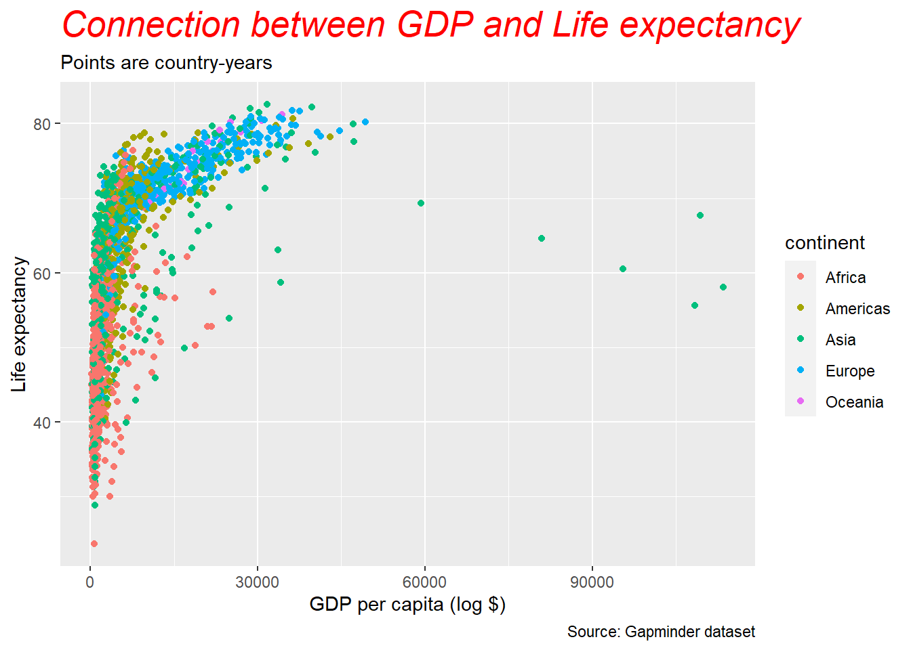

4 Az adatkezelés és vizualizáció alapjai
4.1 A pipe operátor
A pipe operátor %>% mindig egy parancs kimenetét veszi fel, és a következő parancs bemenetévé teszi azt, így segítségével tulajdonképpen folyamat láncolatokat (pipeline) képezhetünk. Mivel az R egy funkcionális nyelv, az R-ben írt kódok gyakran sok zárójelet tartalmaznak. Összetett kódok esetén sok zárójelet kellene egymásba ágyazni, ami megnehezítené a kód olvasását és megértését, ekkor segít a pipe operator. Az alábbiakban például azt akarjuk összeszámolni, hogy hány Anna nevű lány született, amit megtehetjük zárójelek egymásba ágyazásával:
sum(select(filter(babynames,sex == "F",name == "Anna"),n))
De ugyanezt megkaphatjuk a%>% használatával is:
babynames %>%
filter(sex == "F", name == "Anna") %>%
select(n) %>%
sum ()4.2 Egy data frame meghatározott sorainak leválogatása
A következőkben az előző fejezetben megismert data frame meghatározott sorainak leválogatásra láthatunk példát a fentebb bemutatott pipe operátor segítségével. Ehhez az install.packages() paranccsal installáljuk, majd a library()függvény segítségével olvassuk be a következő csomagokat:
install.packages(readr)
install.packages(tidyr)
install.packages(dplyr)
install.packages(purrr)
install.packages(ggplot2)
install.packages(gapminder)library(readr)
library(tidyr)
library(dplyr)
library(purrr)
library(ggplot2)
library(gapminder)Ezután hozzuk létre a gapminder nevű data frame-t:
gapminder_df <- gapminderA jobb felső ablak environment fülén láthatjuk, hogy a data frame 1704 megfigyelést, azaz sort és 6 változót, vagyis oszlopot tartalmaz. A sorok leválogatásához a dplyr csomag filter() parancsát használva, a %>% operátor segítségével leválogatjuk azon országok 1962-es adatait, ahol a várható élettartam meghaladta a 70 évet:
gapminder_df %>%
filter(year == 1962, lifeExp > 70)## # A tibble: 16 x 6
## country continent year lifeExp pop gdpPercap
## <fct> <fct> <int> <dbl> <int> <dbl>
## 1 Australia Oceania 1962 70.9 10794968 12217.
## 2 Belgium Europe 1962 70.2 9218400 10991.
## 3 Canada Americas 1962 71.3 18985849 13462.
## 4 Denmark Europe 1962 72.4 4646899 13583.
## 5 France Europe 1962 70.5 47124000 10560.
## 6 Germany Europe 1962 70.3 73739117 12902.
## 7 Iceland Europe 1962 73.7 182053 10350.
## 8 Ireland Europe 1962 70.3 2830000 6632.
## 9 Netherlands Europe 1962 73.2 11805689 12791.
## 10 New Zealand Oceania 1962 71.2 2488550 13176.
## 11 Norway Europe 1962 73.5 3638919 13450.
## 12 Slovak Republic Europe 1962 70.3 4237384 7481.
## 13 Sweden Europe 1962 73.4 7561588 12329.
## 14 Switzerland Europe 1962 71.3 5666000 20431.
## 15 United Kingdom Europe 1962 70.8 53292000 12477.
## 16 United States Americas 1962 70.2 186538000 16173.De ugyanígy leválogathatjuk a data frame-ből az adatokat egy karakterlánc és egy logikai művelet alapján.
gapminder_df %>%
filter(country == "Sweden", year > 1990)## # A tibble: 4 x 6
## country continent year lifeExp pop gdpPercap
## <fct> <fct> <int> <dbl> <int> <dbl>
## 1 Sweden Europe 1992 78.2 8718867 23880.
## 2 Sweden Europe 1997 79.4 8897619 25267.
## 3 Sweden Europe 2002 80.0 8954175 29342.
## 4 Sweden Europe 2007 80.9 9031088 33860.Itt tehát a data frame azon sorait szeretnénk látni, ahol az ország megegyezik a „Sweden" karakterlánccal az év pedig nagyobb, mint 1990.
A select() parancs segítségével leválogathatunk oszlopokat a data frame-ből, a mutate() segítségével pedig új oszlopot adhatunk hozzá:
gapminder_df %>%
select(country, year, pop) %>% #leválogatjuk a country, year, pop oszlopokat
mutate(pop_k = pop/1000) # létrehozzuk a pop_k oszlopot és meghatározzuk, hogy mit tartalmazzon## # A tibble: 1,704 x 4
## country year pop pop_k
## <fct> <int> <int> <dbl>
## 1 Afghanistan 1952 8425333 8425.
## 2 Afghanistan 1957 9240934 9241.
## 3 Afghanistan 1962 10267083 10267.
## 4 Afghanistan 1967 11537966 11538.
## 5 Afghanistan 1972 13079460 13079.
## 6 Afghanistan 1977 14880372 14880.
## 7 Afghanistan 1982 12881816 12882.
## 8 Afghanistan 1987 13867957 13868.
## 9 Afghanistan 1992 16317921 16318.
## 10 Afghanistan 1997 22227415 22227.
## # ... with 1,694 more rows4.3 Vizualizáció
Az elemzéseinkhez használt data frame adatainak alapján a ggplot2 csomag segítségével lehetőségünk van különböző vizualizációk készítésére is.
A ggplot2 használata során különböző témákat alkalmazhatunk, melyek részletes leírása megtalálható: https://ggplot2.tidyverse.org/reference/ggtheme.html
Abban az esetben, ha nem választunk témát, a ggplot2 a következő ábrán is látható alaptémát használja. Ha például a szürke helyett fehér hátteret szeretnénk, alkalmazhatjuk a theme_minmal()parancsot. Szintén gyakran alkalmazott ábra alap a thema_bw(), ami az előzőtől az ábra keretezésében különbözik. Ha fehér alapon, de a beosztások vonalait feketén szeretnénk megjeleníteni, alkalmazhatjuk a theme_linedraw() függvényt, a theme_void() segítségével pedig egy fehér alapon, beosztásoktól mentes alapot kapunk, a theme_dark() pedig sötét hátteret eredményez. A theme_classic() segítségével az x és y tengelyt jeleníthetjük meg fehér alapon.
Egy ábra készítésének alapja mindig a használni kívánt adatkészlet beolvasása, illetve az ábrázolni kiíván változtót vagy változók megadása.
Ezt követi a megfelelő alakzat kiválasztása, attól függően például, hogy eloszlást, változást, adatok közötti kapcsolatot, vagy elétéseket akarunk ábrázolni. A geom az a geometriai objektum, a mit a diagram az adatok megjelenítésére használ. Agglpot2 több mint 40 féle alakzat alkalmazására ad lehetőséget, ezek közül néhány gyakoribbat mutatunk be az alábbiakban. Az alakzatokról részletes leírása található például az alábbi linken:
https://r4ds.had.co.nz/data-visualisation.html
A következőkben a már korábban is használt gapminder adatok segítségével, személetetjük az adatok vizualizálásának alapjait.
Először egyszerű alapbeállítások mellett egy histogram típusú vizualizációt készítünk.
ggplot(data = gapminder_df, #itt adjuk meg az adatkészletet
mapping = aes(x = gdpPercap)) + #majd a változót
geom_histogram() #és az alakzatot
Lehetőségünk van arra, hogy az alakzat színét megváltoztatássuk. A használható színek és színkódok megtalálhatóak a ggplot2 leírásában: https://ggplot2-book.org/scale-colour.html
ggplot(data = gapminder_df,
mapping = aes(x = gdpPercap)) +
geom_histogram(fill = "yellow", colour = "green") # a fill = után idézőjelben adjuk meg az alakzat kitöltésére, a colour = után pedig a körberajzolására használni kívánt színt
Meghatározhatjuk külön-külön a histogram x és y tengelyén ábrázolni kívánt adatokat és választhatjuk azok pontszerű ábrázolását is.
ggplot(data = gapminder_df,
mapping = aes(x = gdpPercap,
y = lifeExp)) +
geom_point() #itt választjuk a pontszerű ábrázolást
Ahogy az előzőekben, itt is megváltoztathatjuk az ábra színét.
ggplot(data = gapminder_df,
mapping = aes(x = gdpPercap,
y = lifeExp)) +
geom_point(colour = "blue") 
Az fenti script kibővítésével az egyes kontinensek adatait különböző színnel ábrázolhatjuk, az x és y tengelyt elnevezhetjük, a histogramnak címet és alcímet adhatunk, illetve az adataink forrását is feltüntethetjük az alábbi módon:
ggplot(data = gapminder_df,
mapping = aes(x = gdpPercap,
y = lifeExp,
color = continent)) + #a kontinensek adataitkülönböző színekkel ábrázolja
geom_point() +
labs(x = "GDP per capita (log $)", # a labs()segítségével nevezhetjük el a tengelyeket, adhatunk fő és alcímeket az ábrának
y = "Life expectancy",
title = "Connection between GDP and Life expectancy",
subtitle = "Points are country-years",
caption = "Source: Gapminder dataset")
Az ábrán található feliratok méretének, betűtípusának és betűszínének megválasztásra is lehetőségünk van.
ggplot(data = gapminder_df,
mapping = aes(x = gdpPercap,
y = lifeExp,
color = continent)) + #a kontinensek adataitkülönböző színekkel ábrázolja
geom_point() +
labs(x = "GDP per capita (log $)", # a labs()segítségével nevezhetjük el a tengelyeket, adhatunk fő és alcímeket az ábrának
y = "Life expectancy",
title = "Connection between GDP and Life expectancy",
subtitle = "Points are country-years",
caption = "Source: Gapminder dataset")+
theme(plot.title = element_text(size = 20, #megadhatjuk a kívánt betűmértetet
colour = "red", #megadhatjuk a kívánt betűszínt
face = "italic", #beállíthatjuk, hogy a szöveg dőlt betűs legyen
family = "Courier")) #meggadhatjuk a kívánt betűtípust
Készíthetünk oszlopdiagramot is, amit a ggplot2 diamonds adatkészletén személtetünk
ggplot(data = diamonds) +
geom_bar(mapping = aes(x = cut))
Itt is lehetőségünk van arra, hogy a diagram színét megváltoztassuk.
ggplot(data = diamonds) +
geom_bar(mapping = aes(x = cut), fill = "darkgreen")
De arra is lehetőségünk van, hogy az egyes oszlopok eltérő színűek legyenek.
ggplot(data = diamonds) +
geom_bar(mapping = aes(x = cut, fill = cut)) Arra is van lehetőségünk, hogy egyszerre több változót is ábrázoljunk.
Arra is van lehetőségünk, hogy egyszerre több változót is ábrázoljunk.
ggplot(data = diamonds) +
geom_bar(mapping = aes(x = cut, fill = clarity))
Arra ggplot2 segítségével arra is lehetőségünk van, hogy csv-ből beolvasott adatainkat vizualizáljuk.
plot_cap_1 <- read.csv("plot_cap_1.csv", head=TRUE, sep=';') #beolvassuk a csv fájlt, megadva, hogy az egyes oszlopokat ';' határolja
ggplot(plot_cap_1, aes(Year, fill = Subtopic)) + #megadjuk, hogy az adatokat évente és azon belül subtopic-ok szerint szeretnénk rendezni
scale_x_discrete(limits=c(1957, 1958, 1959, 1960, 1961, 1962, 1963))+
geom_bar(position = "dodge") + #meghatározzuk az x tengely értékeit
labs(x= NULL, y = NULL, #az x és az y tengely nem kap külön feliratot
title = "A Magyar Közlönyben kihirdetett agrárpolitikai jogszabályok", #az ábra címe
subtitle = "N=445")+ #az ábra alcíme
coord_flip()+ #az ábra tipusa
theme_minimal()+
theme(plot.title = element_text(size = 12)) #az ábra címének betűméreteA csv-ből belolvasott adatainból kördiagramot is készíthetünk
pie <- read.csv("pie.csv", head=TRUE, sep=';')
ggplot(pie, aes(x="", y=value, fill = Type)) +
geom_bar(stat="identity", width=1) +
coord_polar("y", start=0) +
scale_fill_brewer(palette="GnBu")+
labs(title = "A Magyar Közlönyben megjelent jogszabályok típusai",
subtitle = "N = 445") +
theme_void()